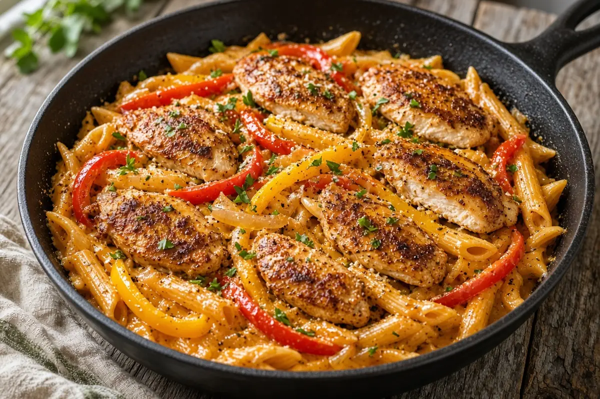

Cajun Chicken Pasta
Cajun-seasoned chicken thighs seared golden and tossed with penne or fettuccine, sweet peppers, onion, and a creamy parmesan Cajun sauce.

Adapted from Allrecipes
8 servings
By
Yield: 8 servings
Prep:
Cook:
Total:
Difficulty: Easy
Ingredients
- 2 lb boneless, skinless chicken thighs, sliced into strips
- 2 Tbsp olive oil, for the chicken
- 2 Tbsp Cajun seasoning
- 1 tsp smoked paprika
- 1 tsp garlic powder
- 1/2 tsp salt
- 1/2 tsp black pepper
- 1 lb fettuccine or penne pasta
- 2 Tbsp butter
- 1 Tbsp olive oil, for the sauce
- 1 large onion, diced
- 4 cloves garlic, minced
- 2 bell peppers (red and yellow), sliced
- 8 oz fresh mushrooms, sliced, optional
- 2 cups heavy cream
- 1 cup chicken broth
- 1 cup grated parmesan cheese, plus more for serving
- 1 tsp Cajun seasoning, for the sauce
- 1/2 tsp salt, for the sauce
- 1/2 tsp black pepper, for the sauce
- 1 Tbsp fresh parsley, chopped
Instructions
- Bring a large pot of salted water to a boil. Cook the pasta until al dente, about 10 minutes. Scoop out 1/2 cup of the pasta water, then drain.
- While the water heats, toss the chicken with the 2 Tbsp Cajun seasoning, smoked paprika, garlic powder, salt, and black pepper.
- Heat the olive oil for the chicken in a large deep skillet over medium-high heat. Sear the chicken 4 minutes per side, until golden and cooked through. Move it to a plate.
- In the same skillet, melt the butter with the olive oil for the sauce. Add the onion, garlic, bell peppers, and mushrooms and cook until softened, about 4 minutes.
- Pour in the chicken broth and heavy cream, then stir in the parmesan, the Cajun seasoning for the sauce, and the salt and pepper for the sauce. Simmer 5 minutes, stirring now and then, until slightly thickened.
- Add the pasta and chicken to the skillet and toss to coat, loosening with the reserved pasta water as needed.
- Top with the parsley and extra parmesan and serve.
Notes: Merged from two saved Cajun Chicken Pasta recipes: the fuller cream-and-broth version as the base, with the boneless thighs and optional mushrooms from the Allrecipes version. Thighs stay juicier than breast; breast strips work with the same timing. Cajun blends vary in salt, so taste before adding the extra salt.